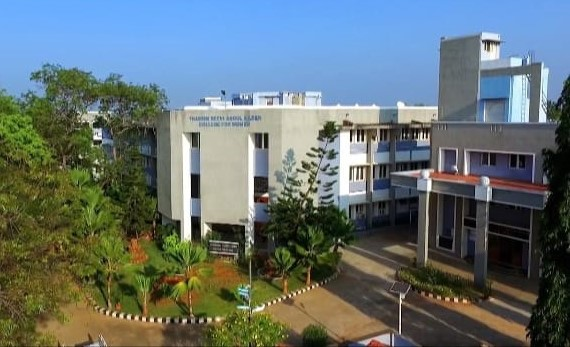

Thassim Beevi Abdul Kader College For Women is a Womens college located at No. 8/93,94, Pearl Matriculation School Road, Kilakarai, Ramanathapuram, Tamil Nadu 623517.It was established in the year 1988 and is affiliated with Alagappa University, Karaikudi.
04567 241 933
thassim.ac.in